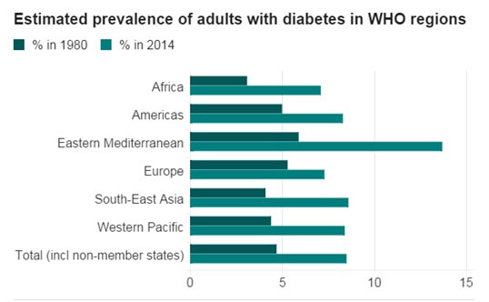

Diabetes is a chronic condition in which sugars build up in the blood beyond a normal level.
Healthy body uses the hormone insulin to move sugars (“glucose”) into the cells. In diabetes body either cannot produce enough insulin or is resistant to its own insulin, so excess sugars can’t move into the cells and, instead, stay in the blood. When glucose in the bloodstream can’t enter into cells, it leads to health problems.
There are 2 main forms of the disease.
Type 1 diabetes is characterized by a lack of insulin production and cannot be prevented.
Type 2 diabetes results from the body's ineffective use of insulin and can be prevented – just 30 minutes of moderate-intensity physical activity on most days and a healthy diet can drastically reduce the risk of developing type 2 diabetes.
One-in-11 people today have diabetes, World Health Organization (WHO) says.
Diabetic cases had nearly quadrupled to 422 million (or 8.5% of the population) in 2014 from 108 million (4.7%) in 1980. High blood sugar levels are a major killer - linked to 3.7 million deaths around the world each year. WHO projects that diabetes will be the 7th leading cause of death in 2030 (Mathers & Loncar, 2006).
- In 2014, more than 1 in 3 adults aged over 18 years were overweight and more than one in 10 were obese.
- 422 million adults were living with diabetes in 2014 - that's 314 million more than there were in 1980.
- 8.5% of adults worldwide has diabetes.
- 1.5 million people died as a result of diabetes in 2012. Higher-than-optimal blood glucose caused an additional 2.2 million deaths by increasing the risks of cardiovascular and other diseases (WHO, 2016).
- 2.2 million additional deaths were caused by higher-than-optimal blood glucose.
- 43% of these 3.7m people died before they were 70 years old.
Source: WHO
The report lumps both type 1 and type 2 diabetes together, but the surge in cases is predominantly down to type 2 - the form closely linked to poor lifestyle.
As the world's waistlines have ballooned - with one-in-three people now overweight, so too has the number of diabetes cases.
Failing to control levels of sugar in the blood has devastating health consequences. Diabetes complications can lead to heart attack, stroke, blindness, kidney failure and lower limb amputation.
It triples the risk of a heart attack and leaves people 20 times more likely to have a leg amputated, as well as increasing the risk of stroke, kidney failure, blindness and complications in pregnancy.
Diabetes itself is the eighth biggest killer in the world, accounting for 1.5 million deaths each year. But a further 2.2 million deaths are linked to high blood sugar levels.
In 1980s the highest rates were found in affluent countries. But now low and middle income countries bearing the largest burden.

Source: WHO
The Middle East has seen the prevalence of diabetes soar from 5.9% of adults in 1980 to 13.7% in 2014. Greatest rise in diabetes, moving from 6 million to 43 million - it is a huge, huge increase.
Middle East has highest rates of diabetes in the world, due to the increase in type 2 diabetes.
"In Qatar and Kuwait have more than 20% of the population with diabetes and people beyond 45 or 60 years old it is 30-40% (WHO, 2014). Diet and inactivity were a major problem.
More than three quarters of teenagers in the middle east are doing less than the recommended level of exercise. Numbers of diabetes cases increases unless "drastic action" was taken.
Source: American Diabetes Association.
In 2012, 29.1 million Americans, or 9.3% of the population, had diabetes.
Eat healthily, be physically active, and avoid excessive weight gain.
References:
-
Global report on diabetes. World Health Organization, Geneva, 2016.
-
Mathers CD, Loncar D.2006. Projections of global mortality and burden of disease from 2002 to 2030. PLoS Med, 2006, 3(11):e442.
-
World Health Organisation – Non communicable disease (NCD) country profile, 2014.
-
http://apps.who.int/iris/bitstream/10665/128038/1/9789241507509_eng.pdf.
Related Links: